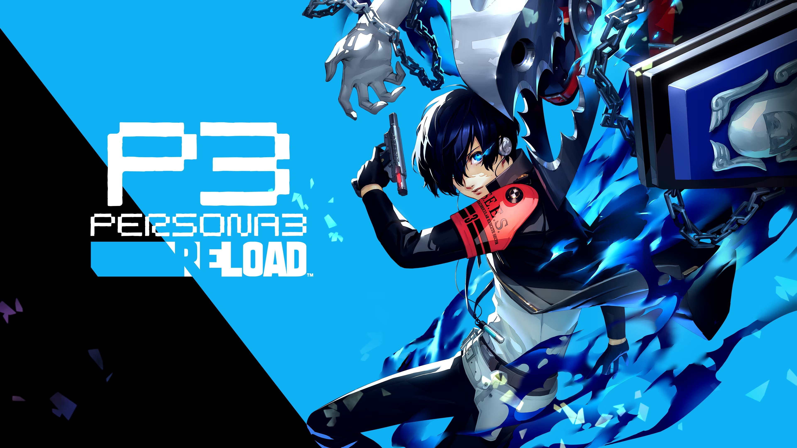

Review
I ranked Persona 3 Reload 1st because it’s easily the most emotional and powerful game I’ve ever played. The style is dark and atmospheric, perfectly matching the themes of mortality and meaning, and the story hit me so hard I swear I wanted to rip my eyeballs out from how much I was sobbing. The cast feels real, and their struggles and growth stayed with me long after I finished. Gameplay is refined and smooth, with satisfying turn-based combat and great pacing, and the music ties everything together with its mix of melancholy and intensity. Overall, it’s a beautifully emotional experience that completely destroyed me in the best way possible.
Style
★★★★★★
Story
★★★★★★
Gameplay
★★★★★
Music
★★★★★